Ayo Ogunade
I build apps for the people around me, from my church to my bus stop.
Honours Computer Science (Software Engineering) at USask, class of 2029. Co-founder and CEO of CalenDue. Open to Summer 2027 internships.
See my projectsI build apps for the people around me, from my church to my bus stop.
Honours Computer Science (Software Engineering) at USask, class of 2029. Co-founder and CEO of CalenDue. Open to Summer 2027 internships.
See my projectsThe ones with the most behind them come first.
Live on the web, the App Store and Google Play, with paying students.
Students upload their course outlines and CalenDue finds every assignment, quiz and exam, then sends them to Google Calendar or Apple Calendar. Callie, its assistant, answers questions from the same pages instead of guessing.
Next.js · TypeScript · Prisma · Supabase · Expo · Claude API · LangChain
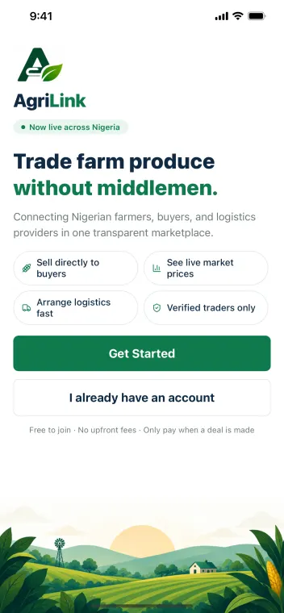
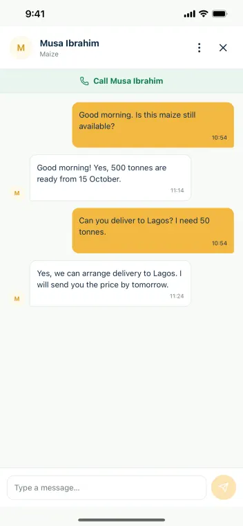
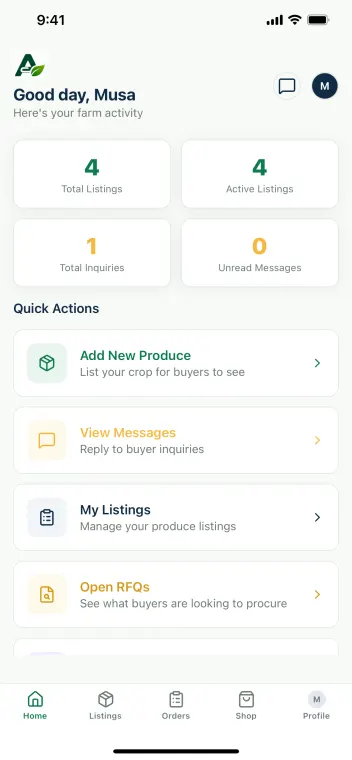
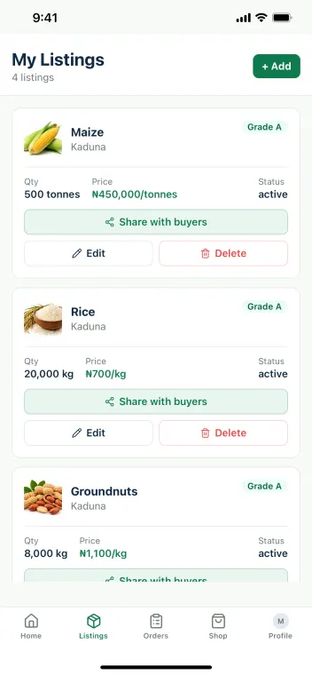
Web and mobile, submitted to both app stores, with real payments designed in.
A marketplace where Nigerian farmers sell produce straight to buyers, with sales consultants who bring sellers on and admins who verify every listing.
Next.js · Expo · Supabase · Paystack · Google Maps · Vercel
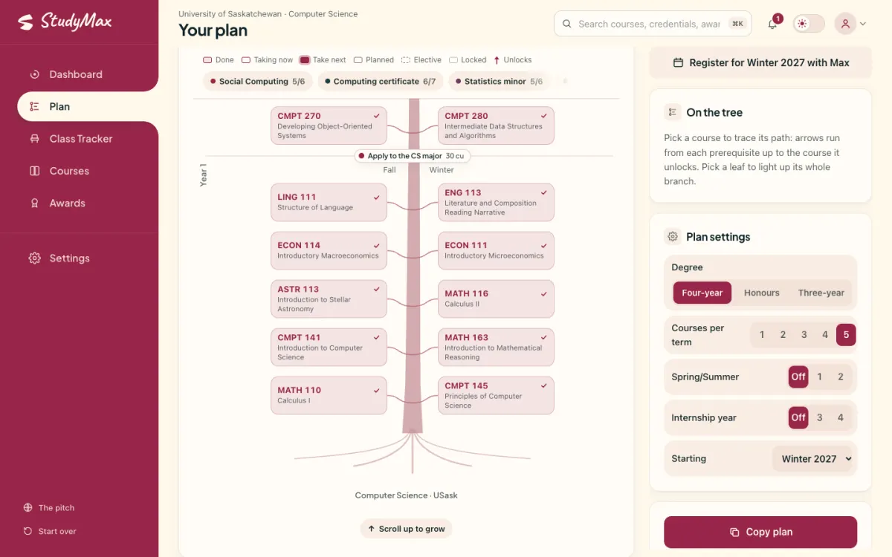
Built in two days, and it works end to end on real USask program data.
StudyMax reads your transcript and shows the credentials you are closest to, the one course that advances most of them, and a term-by-term path to finish. Max, an owl, phones you about the award closing soonest.
React · Vite · TypeScript · Prisma · Capacitor · Vapi
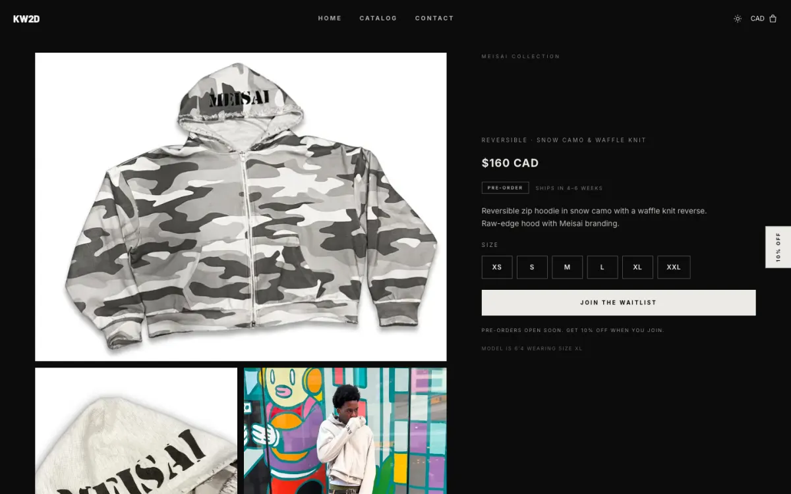
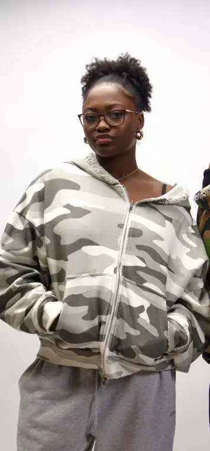
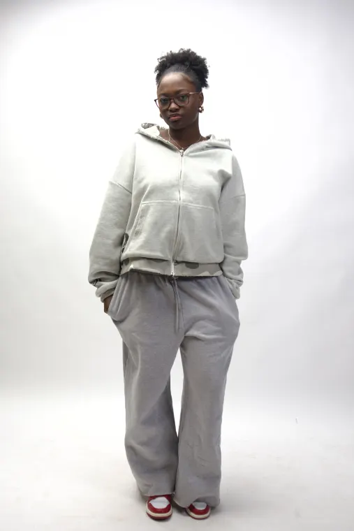
A real client, a real drop, and a site that now belongs to the brand instead of a theme.
Know What 2 Do is a Vancouver streetwear brand that started on a Shopify theme. I moved it to its own storefront, rebuilding its slideshow, drop showcase and waitlist, so it no longer pays for or depends on Shopify.
Next.js · TypeScript · Supabase · Stripe
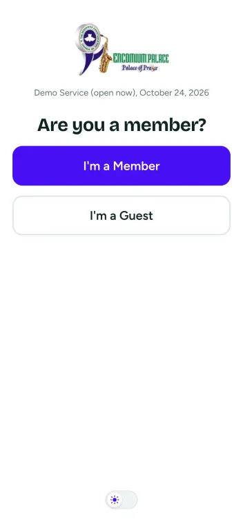
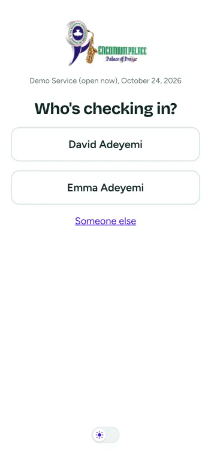
Every slice of the spec is built, tested and deployed.
Members scan a QR code at the door and check in their whole household in two taps. Admins see attendance by service, import the member list and follow up with guests.
Next.js · TypeScript · Prisma · PostgreSQL · Clerk · Vitest
I use it every day instead of the official app.
A transit app for Saskatoon that reads the city's official schedule and live bus feeds directly. Pin a stop or route and see live countdowns, plan a trip with transfers, or watch every bus move on the map.
Node.js · GTFS-realtime · Web Push · Leaflet
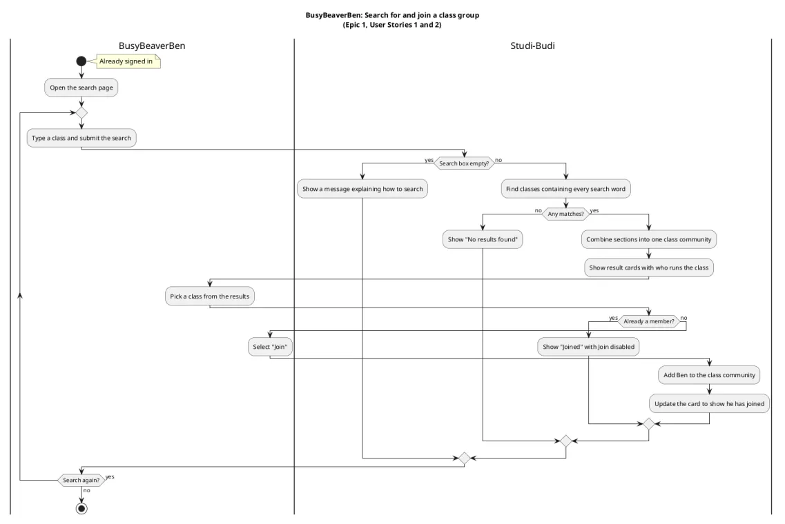
The most complete design work I have done: every decision written down first.
A CMPT 370 team project that matches University of Saskatchewan students into study groups of two to eight inside their own classes. Alumni answer questions through tickets without sharing their email.
Next.js · TypeScript · Supabase · PlantUML
Event emails to every CS professor went from 51 minutes to 4.
As the Computer Science Student Society's event director, I wrote a tool that sends each professor a personal email with the event poster attached, through Outlook on Mac or Windows, with test and draft modes to check before anything goes out.
Python · pandas · AppleScript · Windows COM
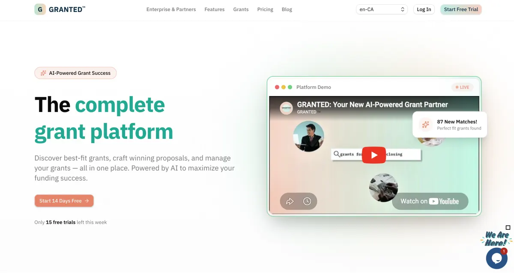
Production code at a company, used by its editors.
An AI-assisted blogging platform for GRANTED's content team. It cut editorial workflow time by 40% and failed sign-in verifications by 30%.
Next.js · PostgreSQL · Prisma · NextAuth · Docker
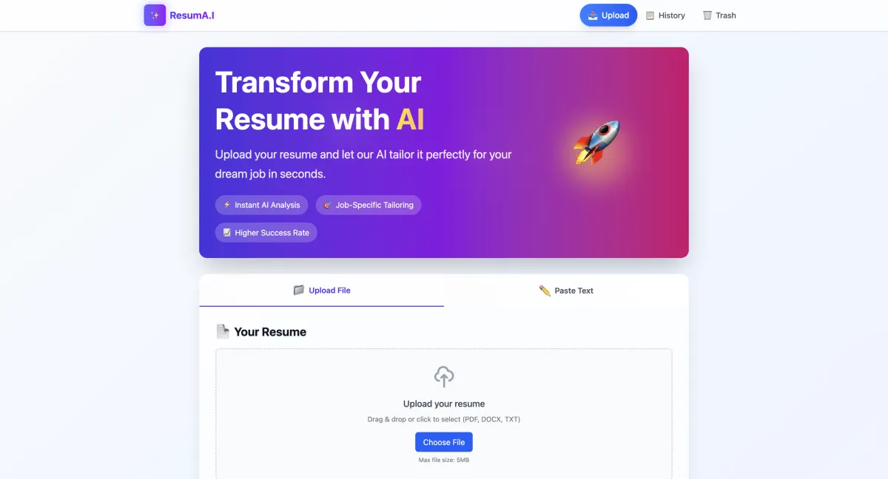
Cut manual resume editing by about 65%.
Upload a resume and a job posting; Google Gemini suggests the changes that fit that job.
Next.js · Google Gemini · MongoDB
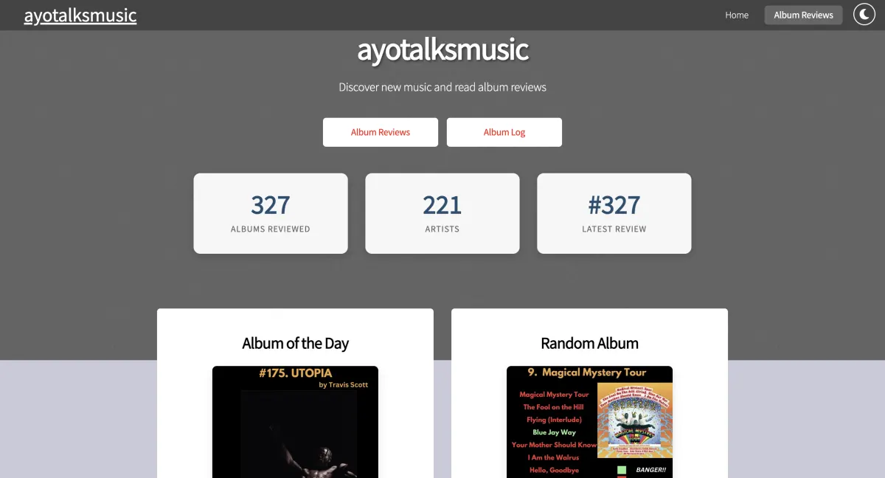
327 albums reviewed, and the site that holds them.
A searchable home for my album reviews, with an album of the day and a random pick.
HTML · CSS · JavaScript
An online store used by over 1,000 people.
An online store with a Next.js front end and Python Flask microservices behind a REST API, using both SQL and NoSQL storage.
Next.js · Python · Flask · MongoDB
Several people editing one document, live.
A collaborative text editor where several people edit the same document and see each other's changes as they type.
React · WebSocket · Render
I am Ayo Ogunade, a third-year computer science student in Saskatoon who builds full-stack apps with AI where it helps. Most start with someone I know who needs one: classmates with fifty deadlines, ushers at my church, farmers selling produce in Nigeria.
I am active in the National Society of Black Engineers, Sankofatech's Achievers in Technology program and the Uniting the Prairies tech conference. Away from a keyboard I am gaming, reviewing albums or watching something.
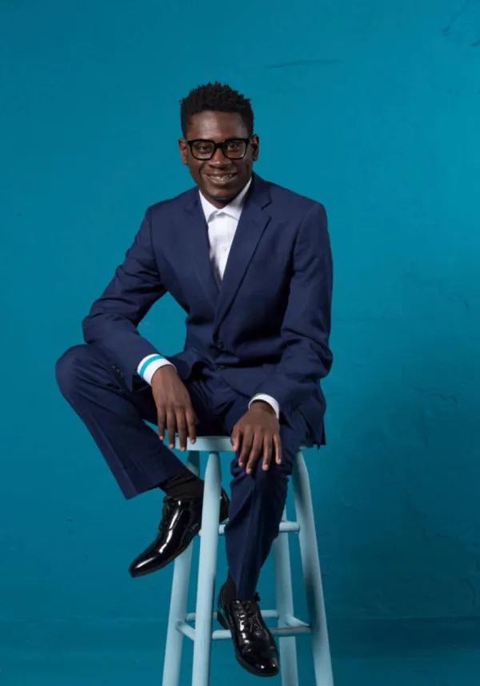
Education
Community
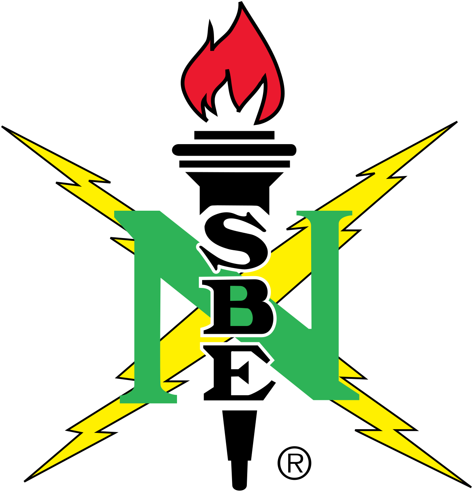
National Society of Black EngineersMember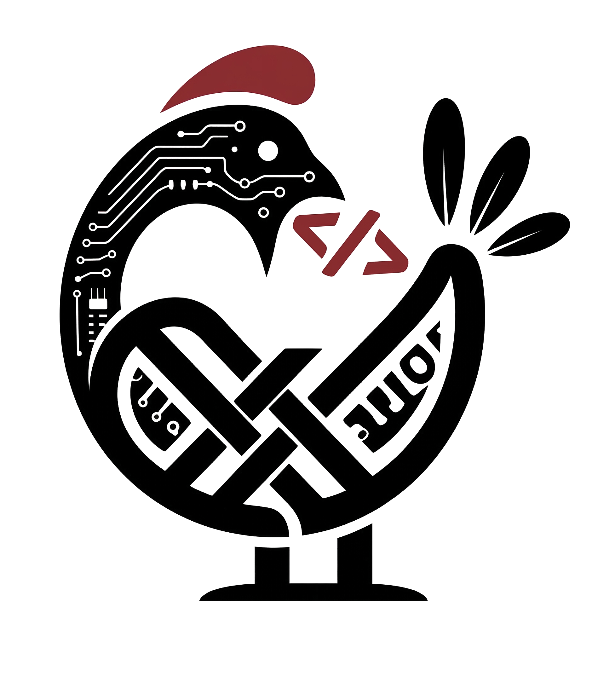
Sankofatech Achievers in TechnologyProgram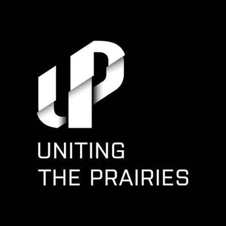
Uniting the Prairies TechConferenceLanguages
Building
Hiring for summer 2027, building something for your people, or just curious how one of these works? Write to me.
ayotundeogunade13@gmail.comLinkedIn
Saskatoon, Central Standard Time all year. I usually reply within a day.